1月のストア公開に足すアプリの機能：位置情報・通知・電波がないとき・アカウントの削除・データの出典と、ストアの紹介画像5枚。明るい表示だけ。報告は docs/pm/report-store-v1.md。
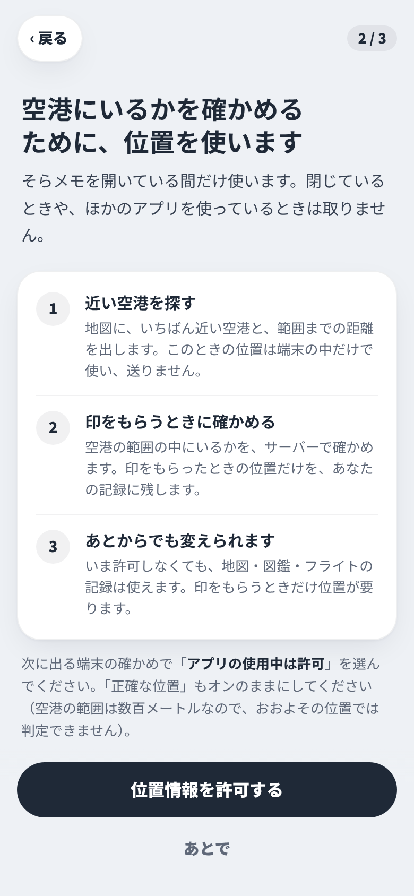
位置情報を使う理由OS の許可の前に出す説明・使っている間だけ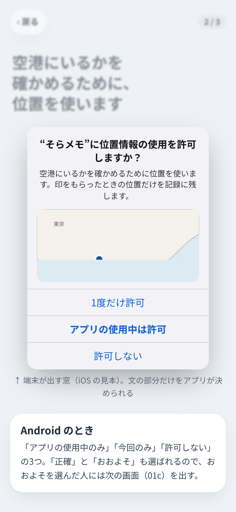
端末の許可の窓（見本）説明の文の長さを確かめる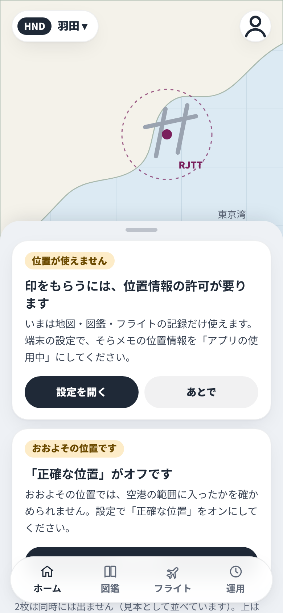
位置が使えないとき許可しない・おおよその位置のとき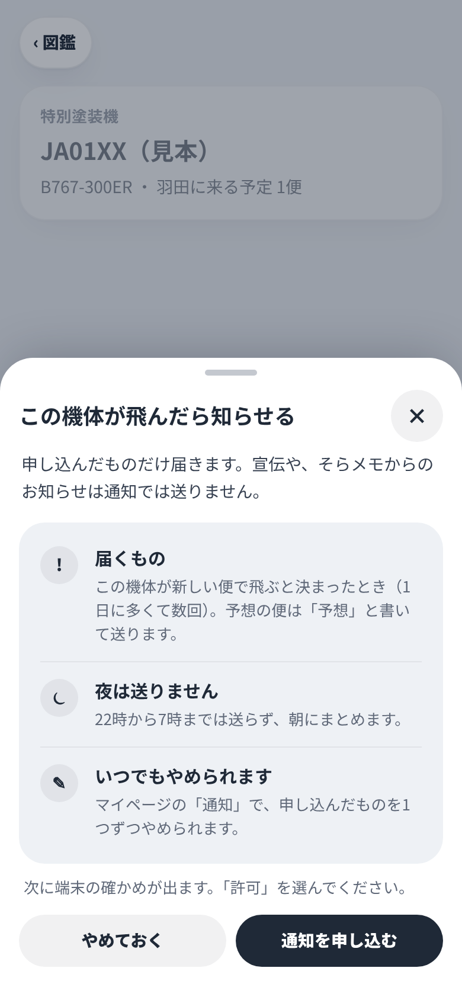
通知を申し込むときボタンを押したときだけ・届くものを先に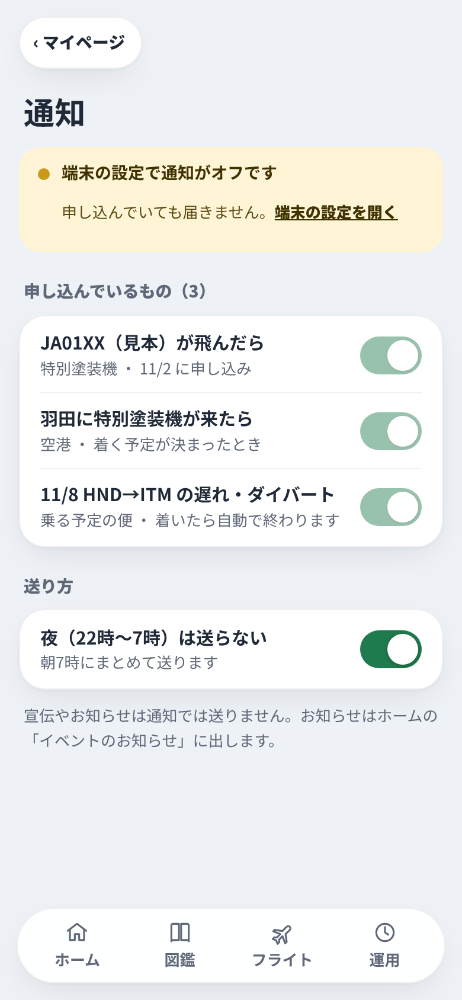
通知の設定申し込んだものの一覧・端末でオフのとき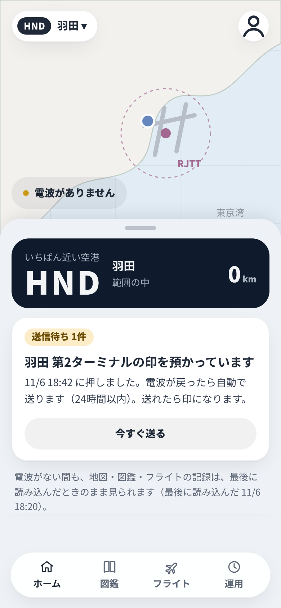
電波がないときのホーム送信待ちの印・最後に読み込んだ時刻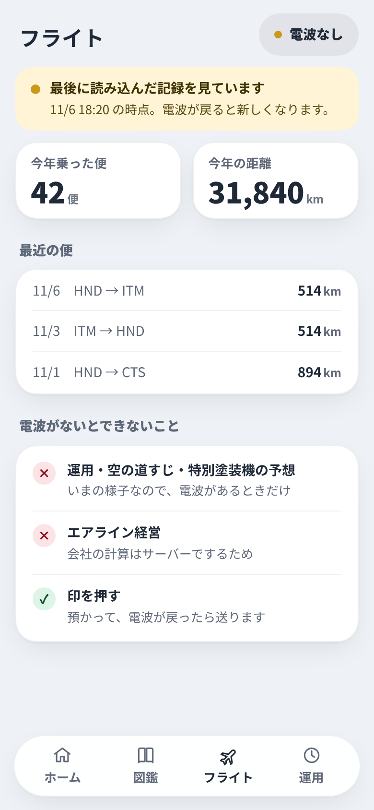
電波がないときの記録最後に読み込んだ記録・できないこと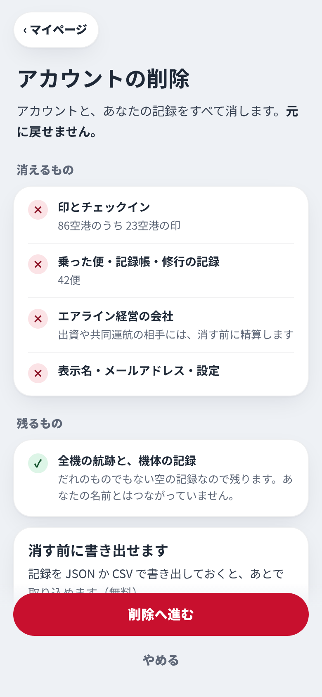
アカウントの削除（説明）消えるもの・残るもの・書き出し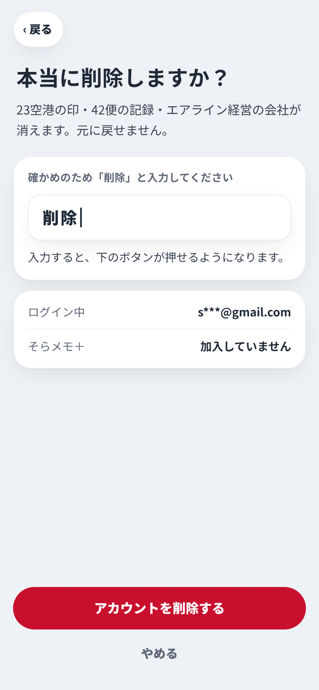
アカウントの削除（確かめ）「削除」と入力・押しまちがいを防ぐ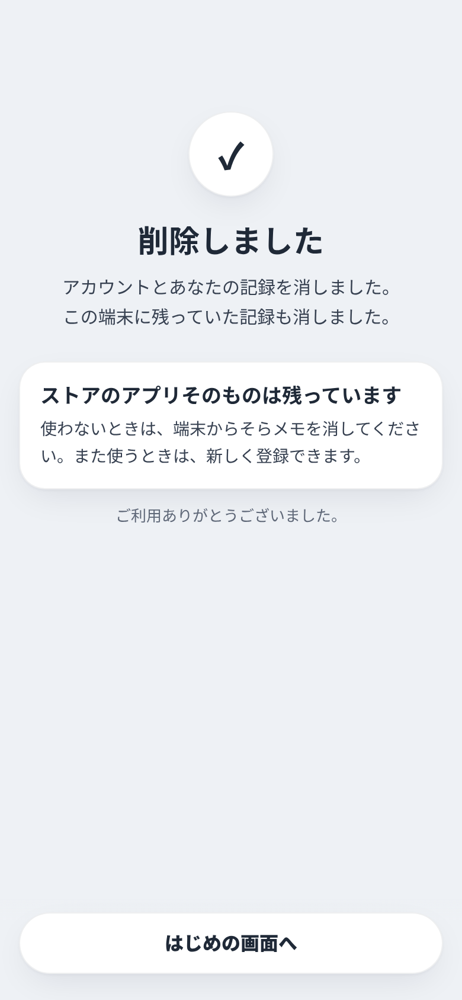
アカウントの削除（済み）済んだあと・アプリそのものは残る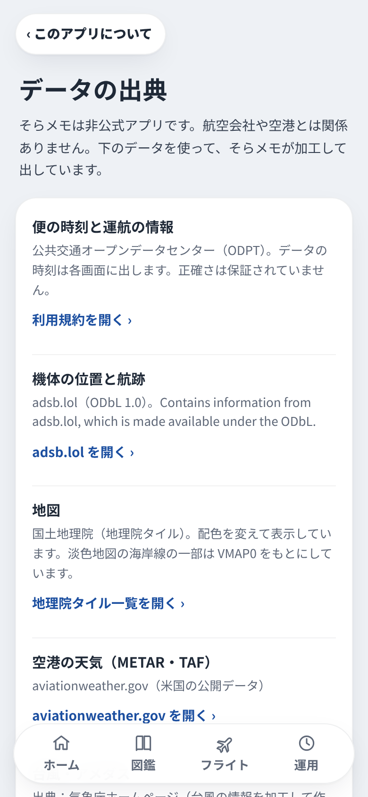
データの出典マイページ › このアプリについて（データ担当の依頼）